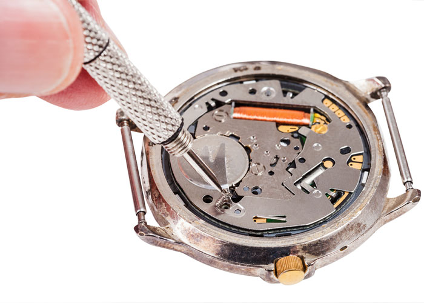

Our store offers complete watch repair on most brands of watches including Rolex, Movado, Fossil, Tag Heuer, Swiss Army as well as many others.
Repair Services
Rolex Service
We provide certified Rolex repair on all models of Rolex watches including service, case refinishing, crystal replacement, etc.
Dive Watches
Pressure Testing and gasket replacement can be performed when necessary.
Cost
The cost of repair depends on the parts and labor required. We estimate every repair before any service is performed. All wrist watches are estimated at no charge.
Time
Repairs such as battery replacement and bracelet sizing can be performed while you wait. Depending on the service needed some repairs may take a few days to a few weeks to be completed.

Our store replaces over 20,000 watch batteries each year in the best and most popular brands on the market including Movado, Tag Heuer, Omega, Swiss Army, Michelle, Breitling, Fossil & many more.
Price
The majority of batteries are $9.00 while some may be $9.00 to $12.00. On some special models batteries may be $25. We will always let you know the price before we replace the battery.
Wait
We replace almost all batteries while you wait.